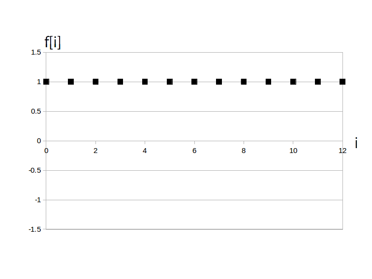

直流(DC)信号はすべての時刻において同じ大きさを取る信号で、数式的には周期 $\textrm{T}_d$ が無限大であるディジタルサイン波 \[ f[i] = a \cdot \sin( 0 \cdot i +\phi ) = a\cdot\sin(\phi) \]
であると考えられます。
ただし $a \cdot \sin( \phi )$ は実数の定数ですので、これを記号 $\alpha$ でまとめると次のような定義が出てきます。
$\alpha$・・・実数の定数、範囲は実数全体、単位は扱う信号の種類による(ボルトとかアンペアとか度とかetc.)
例えば下のグラフは $\alpha = 1$、つまり$f[i] = 1 $ 、$i = 0, 1, \cdots 12$です。
この様に、グラフ的には直流(DC)信号は高さ $\alpha$ の位置にある、マイナス無限大からプラス無限大まで続く横方向の点列になります。
